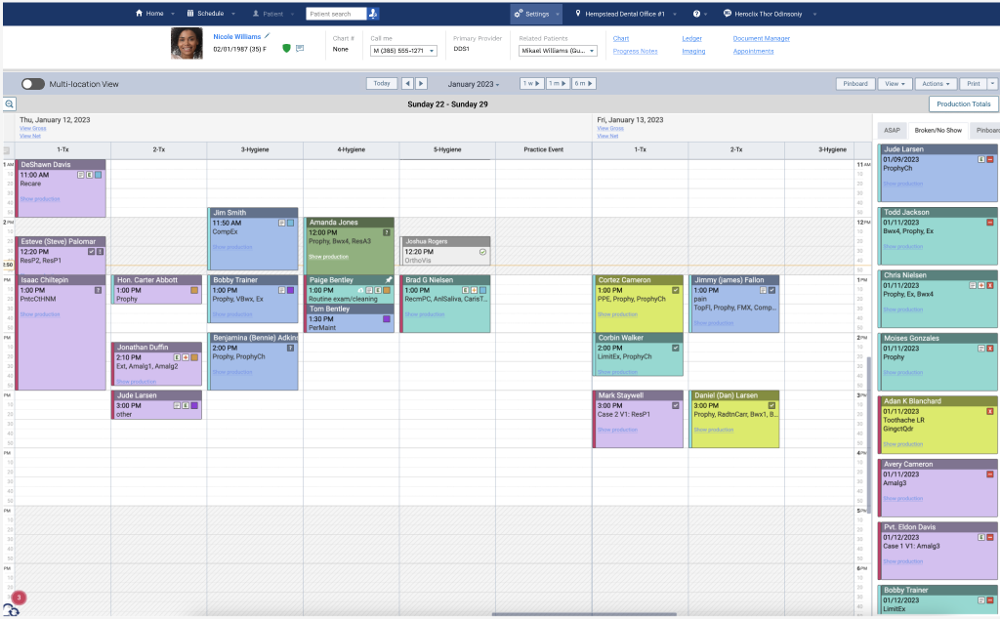
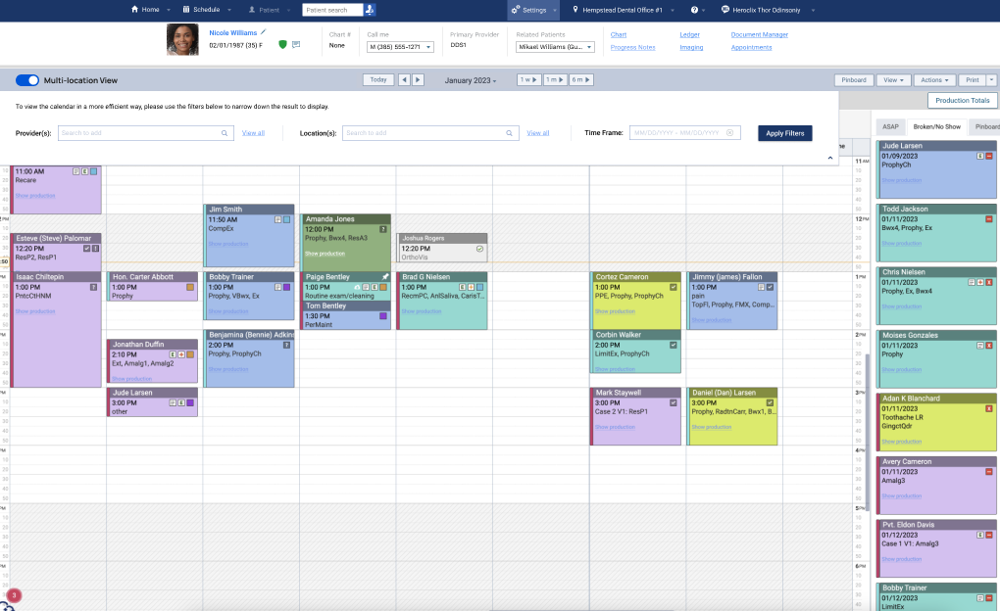
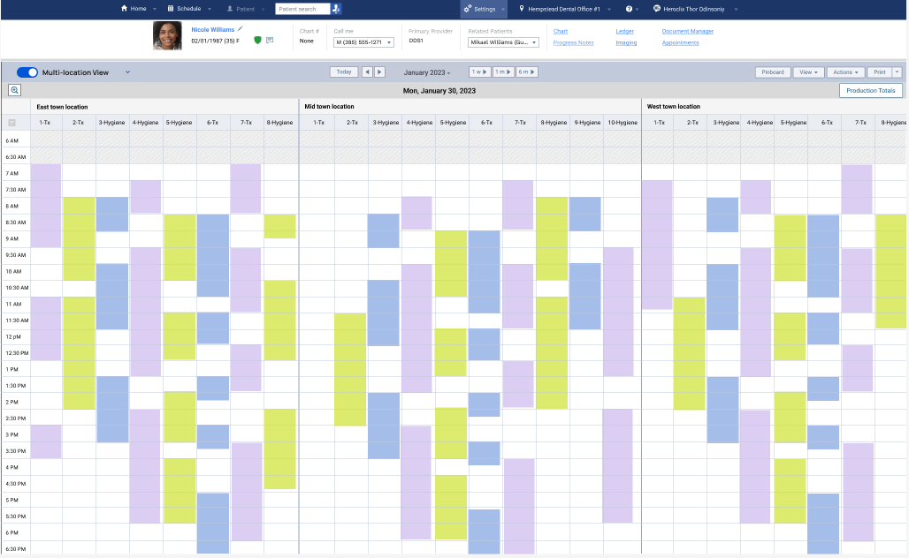

Multiple Locations Scheduling
 Duration: 4 weeks so far
Duration: 4 weeks so far
 Tools: Usertesting.com, FigJam, Figma
Tools: Usertesting.com, FigJam, Figma
 My Roles: User Research, Prototyping
My Roles: User Research, Prototyping
When our software was first launched, its target users are solo dental offices. However, in recent years, a lot of offices started to grow their business and open offices at multiple locations. They share patients among locations and try to accomodate the patients' needs better to suit their busy work and life schedule. More and more, we heard this complaint from our users that the existing scheduling calendar is not the most user friendly. They can't see more than one schedule calendar on the screen. This is when we decided that it's time to improve the sheduling experience for users with multiple locations.
The team consists of two product managers and a UX designer (me). Before we talked to any users, we sat down and had a couple of brainstorm sessions in FigJam to make sure that we understand well the problem we try to solve. Based on our discussion, I created a user interview script to incorporate all the questions that are critical to problem solving and we don't have a clear answer to yet.

Next, we started to look around and try to get some users to talk to us. We were able to set up 5 interview sessions, with users having different size of offices: a user with only 2 locations, two users with 10-30 locations, and two users with 100+ locations
The interview sessions were a great success and we were able to collect some very useful insight. After reviewing the interview videos several times and making detailed notes, I noticed that are some common painpoints and common use patterns.
- All users think it's painful to switch from one location to another one, mainly due to the bad performance and lagging time. This obvisouly is not part of the design issue, but needs to be addressed ASAP;
- All users are currently manually browse through the calendar whenever they need to find an opening.
- It is painful to move one patient from one location to a different one because they had to delete the appointment from the original location and create one from scratch at the new location;
- When asked whether they are aware of the "Search openings" feature, they all know this feature exists. However, only one user said she would want to give this feature another try if we improve it. The other four users said they live on the calendar and they didn't care much about the search function, even if we make a great improvement on it.
The last point was totally unexpected to the whole team because we thought people would be very open to a great search function if that will save them time and make their work more efficient. That's the feature we thought we would focus to improve the experience for our users. Now we need to step back and take another look at the existing product. We need to figure out a way to improve the calendar view to make the feature they love better.
I created the user persona based on the user research insights. To help the team and potentially everybody who will be working on the project to better understand the user's current issues and needs, I created a story for our persona.


Now that I have an idea what the painpoints are and what caused this problem, I started to work out a solution.
Based on the user research, we know that our users love the calendar view because it's more visual and the data displayed here is accurate. I decided that I will focus on the calendar but somehow give the user the capability to select the data they want to show on this calendar. This way, at least they will be able to see the data they need on one screen.


